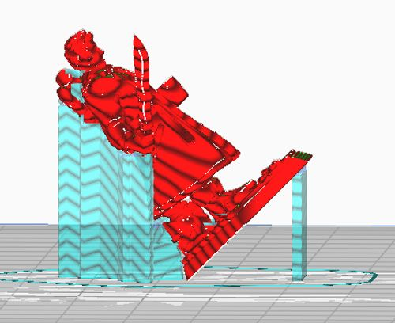

Welcome to the first day of college! Ope, sorry, wrong orientation. This ones about how you print objects! When you feed an STL into a slicer, you can choose the physical orientation (oooohhhh) of the object. This has a few effects.
It changes where/if you need support. Shown below is a DnD mini I printed once. I printed it at a 45 degree angle, so that nearly all of the 3D printed supports would be between the model and the print bed, not the model and itself. When printed upright, removing the support between the base and the arms was difficult, because it would torque and push fragile elements. But at 45 degrees, once removed from the build plate I had a free end which helped to get it removed. You also have a chance to delete overhangs, by rotating them so they don’t overhang!
FDM 3D prints are, by their sliced nature, anisotropic. Said another way, they are stronger in the XY plane than in the Z axis. This happens because stacked layers are not adhered together as strongly as the lines in each slice. So especially when printing structural parts, it is important to keep in mind what axis the force will travel along, and make sure that axis is parallel to the print bed while printing.

This print setup is one the author used to get a print of a complex figure to be easily seperated from supports. Source, 3dstartpoint.com.